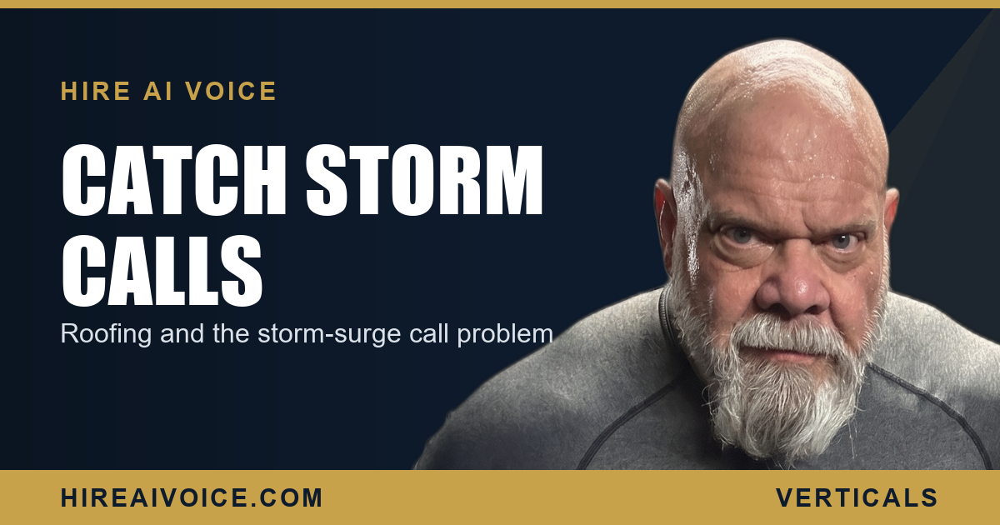

Roofing Companies and the Storm-Surge Call Problem

The Short Version
- Roofing demand is spiky. A storm rolls through and dozens of homeowners call your company within hours, all at once.
- That is the exact moment your whole crew is on roofs, so there is no one free to answer the phone.
- Whoever answers and books the inspection first wins the job. Every call that hits voicemail is a roof that goes to a competitor.
- A 24/7 AI voice agent absorbs the surge, answers every call at once, books the inspection, and captures every storm lead.
- Setup runs about 72 hours, starts at $297 a month, and has no contracts, so you are ready before the next storm.
Why Is the Phone Impossible After a Storm?
Because the demand and the labor spike at the very same moment. A storm moves through Santa Clarita or somewhere in LA County, and within a few hours dozens of homeowners are looking up at missing shingles, a sagging gutter, or a fresh water stain on the ceiling. They all reach for the phone at once. That same morning, your entire crew is already booked solid, up on roofs running inspections and tarping leaks. The work and the calls peak together, and there is nobody left to answer the phone.
This is what makes roofing different from a lot of trades. You do not get a steady trickle of leads you can handle one at a time. You get a flat week, then a wall of calls in a single afternoon. A normal front desk drowns in that surge. The calls roll to voicemail, the homeowner hangs up, and they dial the next roofer on the list.
How Many Storm Leads Are You Actually Losing?
More than you think, because you never see the calls you miss. When fifty homeowners call in one afternoon and one person is working the phone, most of those callers get a busy signal or voicemail. They do not wait. A roof leak is an emergency in their mind, and they keep dialing until a human picks up.
Run the math on a single storm. If two hundred homeowners in your area call around the same window and your phone can only catch a fraction of them live, the rest scatter to every other roofer in the valley. You did not lose those jobs on price or on reputation. You lost them because the call came in while your hands were full.
Who Wins the Storm Job?
The roofer who answers and books the inspection first. Homeowners with storm damage are not shopping around for weeks. They are scared about the next rain, and they hire the first company that picks up, sounds calm, and gets an inspection on the calendar. Speed is the whole game here, just like it is for any service business in the first five minutes.
Every call that hits your voicemail after a storm is a roof your competitor inspects tomorrow.
Think about the homeowner standing in their driveway looking at a missing patch of shingles. They make three calls. The first roofer's line is busy. The second goes to voicemail. The third answers, books an inspection for the next morning, and tells them it will be okay. Guess who gets the job and the insurance work behind it. The other two never even knew that homeowner existed.
How Does an AI Voice Agent Absorb the Surge?
It answers every call at once, with no hold time and no busy signal, no matter how many homeowners dial in the same hour. A single front-desk person can hold one conversation at a time. An AI voice agent holds fifty at once and never gets flustered, never rushes a caller off the line, never lets a call ring out. The surge that would bury a human is just a normal Tuesday for the agent.
On each call it greets the homeowner by your company name, listens to what they are seeing on the roof, collects the address and details, and books the inspection straight onto your calendar. By the time your crew climbs down and gets back to the office, the appointments are already set. You are not spending the evening calling back a stack of voicemails and hoping they have not hired someone else. The schedule filled itself while you worked.
What About Calls at Night and on Weekends?
Storms do not keep business hours, and neither does the agent. The hail that hits at 9 PM or the leak a homeowner finds Sunday morning produces some of your highest-intent calls of the whole week, and those are the exact calls a normal office misses. The AI voice agent answers 24 hours a day, 7 days a week, so the homeowner who spots water coming through the ceiling at 11 PM gets a real conversation and a booked inspection instead of your voicemail.
This is the whole point of an AI receptionist that never sleeps. The same way it works for plumbers handling after-hours emergencies, it keeps your roofing company first in line every hour of every day, storm or no storm. No call goes cold, and no lead leaks to the competitor who happened to be awake.
What Should a Roofing Owner Do Before the Next Storm?
You do not need a bigger ad budget. You need to stop letting the surge wash your leads over to other roofers. Three moves:
1. Count the misses. After your next busy day, look at how many calls actually got answered live versus how many rolled to voicemail. That gap is your hidden lost revenue, and on a storm day it is brutal.
2. Put a 24/7 answer in place. An AI voice agent that picks up every call and books the inspection turns your worst, busiest days into your best ones. The bigger the storm, the more it pays for itself.
3. Get it live before you need it. Setup runs about 72 hours, so the time to stand it up is before the next storm rolls in, not during it.
The roofing companies winning in Santa Clarita and LA County are not the ones with the most trucks. They are the ones who answer every storm call and book the inspection first. The surge is coming either way. The only question is whether you catch it or hand it to the roofer down the street.
Catch Every Storm Call
Our AI voice agent answers every call 24/7, absorbs the storm surge, books the inspection, and follows up automatically. Live in 72 hours. $297/month, no contracts. Or call Sarah, our live agent, and hear it yourself.